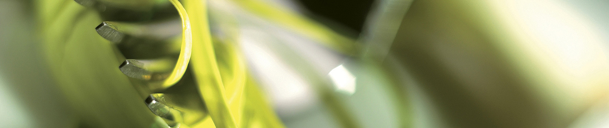
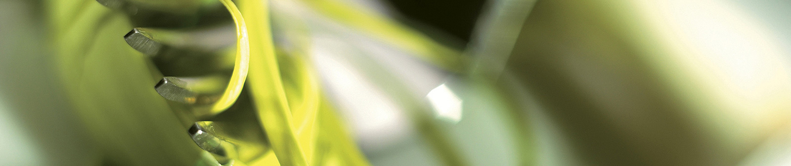

Шпагети Карбонара160 денари
Пиле бомбај220 денари

Даска АРАЖОК390 денари
Шпагети Карбонара160 денари
Пиле бомбај220 денари

Даска АРАЖОК390 денари
НОВО ! ! !

Салати
Салатите се дел од оброкот, без кои главното јадење нема да може никако да стане врвен специјалитет.
Постојат безброј комбинации на продукти од кои може да се направат салати за сечиј вкус.
Види повеќе
Главно јадење
Главното јадење е важен избор за убава енергија и хранителни материи во преостанатите часови од денот.
Направете нешто доброто за себе, јадете добро избрана храна.
Види повеќе
Десерти
За многумина, десертот е најубавиот дел од оброкот. После напорниот ден на работа, почастете се со највкусните
десерти во градот.
Види повеќе